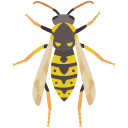

Ce site est la mémoire d'un rucher.

Enregistrez vos sessions de capture, suivez vos statistiques et gérez vos postes de piégeage et appâts.
Observations, expériences et vie du rucher — des notes de terrain au fil des saisons.